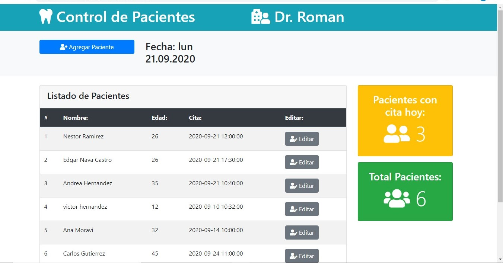
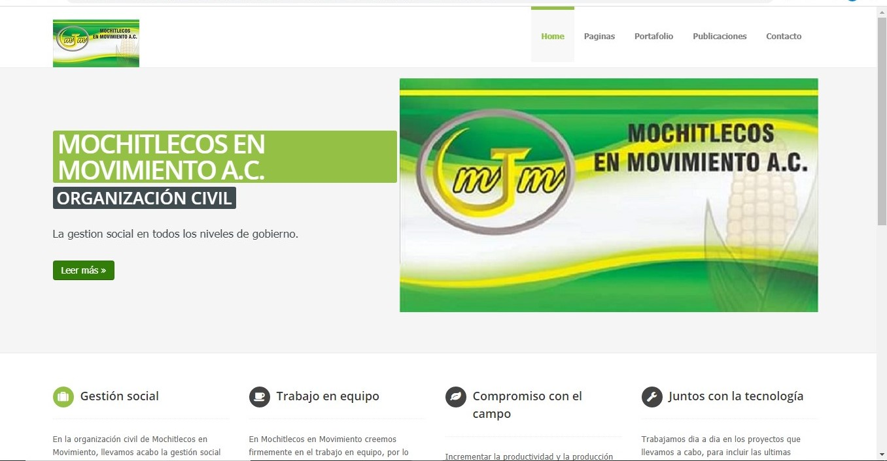
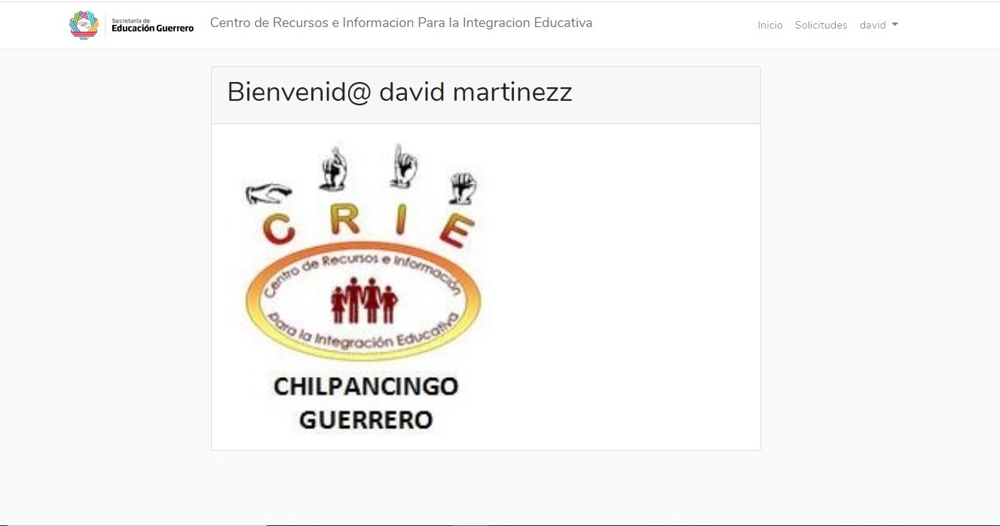

Alejandro Olea Pagina Web
Bienvenido a mi pagina web en esta encontrarás más acerca de mí, y de los proyectos que he desarrollado.o.

Control de Pacientes
Aplicación para el control de pacientes, está desarrollado utilizando la versión empresarial, específicamente las tecnologías de JSPs y Servlets,
está diseñado con el patrón de diseño MVC el cual los JSPs hacen de vista y el servlet de controlador...
Leer más... →

Mochitlecos en Movimiento
Sitio web de la organización civil Mochitlecos en Movimiento A.C. en esta página se muestra información
acerca de las actividades y proyectos que la organización ha desarrollado así como contacto...
Leer más.. →

Control de Expedientes CRIE con Laravel
Este proyecto es una versión actualizada de la primera aplicación para el control de expedientes del CRIE, pero para esta versión
se utilizó un framework de desarrollo PHP, Laravel...
Leer más.. →